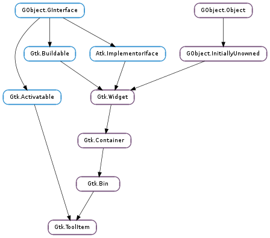

| Subclasses: | Gtk.SeparatorToolItem, Gtk.ToolButton |
|---|
| static | new() |
| get_ellipsize_mode() | |
| get_expand() | |
| get_homogeneous() | |
| get_icon_size() | |
| get_is_important() | |
| get_orientation() | |
| get_proxy_menu_item(menu_item_id) | |
| get_relief_style() | |
| get_text_alignment() | |
| get_text_orientation() | |
| get_text_size_group() | |
| get_toolbar_style() | |
| get_use_drag_window() | |
| get_visible_horizontal() | |
| get_visible_vertical() | |
| rebuild_menu() | |
| retrieve_proxy_menu_item() | |
| set_expand(expand) | |
| set_homogeneous(homogeneous) | |
| set_is_important(is_important) | |
| set_proxy_menu_item(menu_item_id, menu_item) | |
| set_tooltip_markup(markup) | |
| set_tooltip_text(text) | |
| set_use_drag_window(use_drag_window) | |
| set_visible_horizontal(visible_horizontal) | |
| set_visible_vertical(visible_vertical) | |
| toolbar_reconfigured() |
| Name | Type | Flags | Description |
|---|---|---|---|
| is-important | bool | r/w | Whether the toolbar item is considered important. When True, toolbar buttons show text in Gtk.ToolbarStyle.BOTH_HORIZ mode |
| visible-horizontal | bool | r/w | Whether the toolbar item is visible when the toolbar is in a horizontal orientation. |
| visible-vertical | bool | r/w | Whether the toolbar item is visible when the toolbar is in a vertical orientation. |
| Name | Parameters | Return | Description |
|---|---|---|---|
| bool | This signal is emitted when the toolbar needs information from tool_item about whether the item should appear in the toolbar overflow menu. In response the tool item should either * call Gtk.ToolItem.set_proxy_menu_item () with a None pointer and return True to indicate that the item should not appear in the overflow menu * call Gtk.ToolItem.set_proxy_menu_item () with a new menu item and return True, or * return False to indicate that the signal was not handled by the item. This means that the item will not appear in the overflow menu unless a later handler installs a menu item. The toolbar may cache the result of this signal. When the tool item changes how it will respond to this signal it must call Gtk.ToolItem.rebuild_menu () to invalidate the cache and ensure that the toolbar rebuilds its overflow menu. | ||
| toolbar-reconfigured | This signal is emitted when some property of the toolbar that the item is a child of changes. For custom subclasses of Gtk.ToolItem, the default handler of this signal use the functions * Gtk.ToolShell.get_orientation () * Gtk.ToolShell.get_style () * Gtk.ToolShell.get_icon_size () * Gtk.ToolShell.get_relief_style () to find out what the toolbar should look like and change themselves accordingly. |
Bases: Gtk.Bin, Gtk.Activatable
Gtk.ToolItem s are widgets that can appear on a toolbar. To create a toolbar item that contain something else than a button, use Gtk.ToolItem.new (). Use Gtk.Container.add () to add a child widget to the tool item.
For toolbar items that contain buttons, see the Gtk.ToolButton, Gtk.ToggleToolButton and Gtk.RadioToolButton classes.
See the Gtk.Toolbar class for a description of the toolbar widget, and Gtk.ToolShell for a description of the tool shell interface.
| Returns: | the new Gtk.ToolItem |
|---|---|
| Return type: | Gtk.ToolItem |
Creates a new Gtk.ToolItem
| Returns: | a Pango.EllipsizeMode indicating how text in tool_item should be ellipsized. |
|---|---|
| Return type: | Pango.EllipsizeMode |
Returns the ellipsize mode used for tool_item. Custom subclasses of Gtk.ToolItem should call this function to find out how text should be ellipsized.
| Returns: | True if tool_item is allocated extra space. |
|---|---|
| Return type: | bool |
Returns whether tool_item is allocated extra space. See Gtk.ToolItem.set_expand ().
| Returns: | True if the item is the same size as other homogeneous items. |
|---|---|
| Return type: | bool |
Returns whether tool_item is the same size as other homogeneous items. See Gtk.ToolItem.set_homogeneous ().
| Returns: | a Gtk.IconSize indicating the icon size used for tool_item |
|---|---|
| Return type: | int |
Returns the icon size used for tool_item. Custom subclasses of Gtk.ToolItem should call this function to find out what size icons they should use.
| Returns: | True if tool_item is considered important. |
|---|---|
| Return type: | bool |
Returns whether tool_item is considered important. See Gtk.ToolItem.set_is_important ()
| Returns: | a Gtk.Orientation indicating the orientation used for tool_item |
|---|---|
| Return type: | Gtk.Orientation |
Returns the orientation used for tool_item. Custom subclasses of Gtk.ToolItem should call this function to find out what size icons they should use.
| Parameters: | menu_item_id (str) – a string used to identify the menu item |
|---|---|
| Returns: | The Gtk.MenuItem passed to Gtk.ToolItem.set_proxy_menu_item (), if the menu_item_id s match. |
| Return type: | Gtk.Widget |
If menu_item_id matches the string passed to Gtk.ToolItem.set_proxy_menu_item () return the corresponding Gtk.MenuItem.
Custom subclasses of Gtk.ToolItem should use this function to update their menu item when the Gtk.ToolItem changes. That the menu_item_id s must match ensures that a Gtk.ToolItem will not inadvertently change a menu item that they did not create.
| Returns: | a Gtk.ReliefStyle indicating the relief style used for tool_item. |
|---|---|
| Return type: | Gtk.ReliefStyle |
Returns the relief style of tool_item. See Gtk.Button.set_relief (). Custom subclasses of Gtk.ToolItem should call this function in the handler of the Gtk.ToolItem ::toolbar-reconfigured signal to find out the relief style of buttons.
| Returns: | a float indicating the horizontal text alignment used for tool_item |
|---|---|
| Return type: | float |
Returns the text alignment used for tool_item. Custom subclasses of Gtk.ToolItem should call this function to find out how text should be aligned.
| Returns: | a Gtk.Orientation indicating the text orientation used for tool_item |
|---|---|
| Return type: | Gtk.Orientation |
Returns the text orientation used for tool_item. Custom subclasses of Gtk.ToolItem should call this function to find out how text should be orientated.
| Returns: | a Gtk.SizeGroup |
|---|---|
| Return type: | Gtk.SizeGroup |
Returns the size group used for labels in tool_item. Custom subclasses of Gtk.ToolItem should call this function and use the size group for labels.
| Returns: | A Gtk.ToolbarStyle indicating the toolbar style used for tool_item. |
|---|---|
| Return type: | Gtk.ToolbarStyle |
Returns the toolbar style used for tool_item. Custom subclasses of Gtk.ToolItem should call this function in the handler of the Gtk.ToolItem ::toolbar-reconfigured signal to find out in what style the toolbar is displayed and change themselves accordingly
Possibilities are:
| Returns: | True if tool_item uses a drag window. |
|---|---|
| Return type: | bool |
Returns whether tool_item has a drag window. See Gtk.ToolItem.set_use_drag_window ().
| Returns: | True if tool_item is visible on toolbars that are docked horizontally. |
|---|---|
| Return type: | bool |
Returns whether the tool_item is visible on toolbars that are docked horizontally.
| Returns: | Whether tool_item is visible when the toolbar is docked vertically |
|---|---|
| Return type: | bool |
Returns whether tool_item is visible when the toolbar is docked vertically. See Gtk.ToolItem.set_visible_vertical ().
Calling this function signals to the toolbar that the overflow menu item for tool_item has changed. If the overflow menu is visible when this function it called, the menu will be rebuilt.
The function must be called when the tool item changes what it will do in response to the Gtk.ToolItem ::create-menu-proxy signal.
| Returns: | The Gtk.MenuItem that is going to appear in the overflow menu for tool_item. |
|---|---|
| Return type: | Gtk.Widget |
Returns the Gtk.MenuItem that was last set by Gtk.ToolItem.set_proxy_menu_item (), ie. the Gtk.MenuItem that is going to appear in the overflow menu.
| Parameters: | expand (bool) – Whether tool_item is allocated extra space |
|---|
Sets whether tool_item is allocated extra space when there is more room on the toolbar then needed for the items. The effect is that the item gets bigger when the toolbar gets bigger and smaller when the toolbar gets smaller.
| Parameters: | homogeneous (bool) – whether tool_item is the same size as other homogeneous items |
|---|
Sets whether tool_item is to be allocated the same size as other homogeneous items. The effect is that all homogeneous items will have the same width as the widest of the items.
| Parameters: | is_important (bool) – whether the tool item should be considered important |
|---|
Sets whether tool_item should be considered important. The Gtk.ToolButton class uses this property to determine whether to show or hide its label when the toolbar style is Gtk.ToolbarStyle.BOTH_HORIZ. The result is that only tool buttons with the “is_important” property set have labels, an effect known as “priority text”
| Parameters: |
|
|---|
Sets the Gtk.MenuItem used in the toolbar overflow menu. The menu_item_id is used to identify the caller of this function and should also be used with Gtk.ToolItem.get_proxy_menu_item ().
| Parameters: | markup (str) – markup text to be used as tooltip for tool_item |
|---|
Sets the markup text to be displayed as tooltip on the item. See Gtk.Widget.set_tooltip_markup ().
| Parameters: | text (str) – text to be used as tooltip for tool_item |
|---|
Sets the text to be displayed as tooltip on the item. See Gtk.Widget.set_tooltip_text ().
| Parameters: | use_drag_window (bool) – Whether tool_item has a drag window. |
|---|
Sets whether tool_item has a drag window. When True the toolitem can be used as a drag source through Gtk.Widget.drag_source_set (). When tool_item has a drag window it will intercept all events, even those that would otherwise be sent to a child of tool_item.
| Parameters: | visible_horizontal (bool) – Whether tool_item is visible when in horizontal mode |
|---|
Sets whether tool_item is visible when the toolbar is docked horizontally.
| Parameters: | visible_vertical (bool) – whether tool_item is visible when the toolbar is in vertical mode |
|---|
Sets whether tool_item is visible when the toolbar is docked vertically. Some tool items, such as text entries, are too wide to be useful on a vertically docked toolbar. If visible_vertical is False tool_item will not appear on toolbars that are docked vertically.
Emits the signal Gtk.ToolItem ::toolbar-reconfigured on tool_item. Gtk.Toolbar and other Gtk.ToolShell implementations use this function to notify children, when some aspect of their configuration changes.